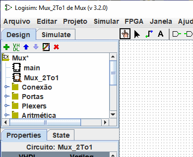
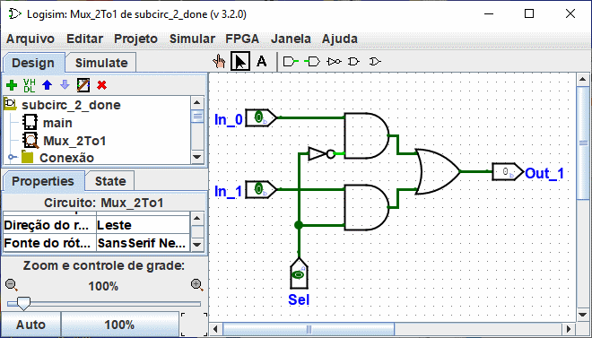

Criar circuitos
Cada projeto Logisim é realmente uma biblioteca de circuitos. Em sua forma mais simples, cada projeto terá um único circuito (chamado "main" por padrão), mas é fácil adicionar mais: para isso, você pode clicar no  na barra de menu acima do painel de navegação ou clique com o botão direito do mouse na raiz da árvore no painel de navegação ou mesmo selecionar | Projeto |→| Adicionar Circuito... |, e digitar qualquer nome. Você poderá aproveitar, então, o novo circuito que criar.
na barra de menu acima do painel de navegação ou clique com o botão direito do mouse na raiz da árvore no painel de navegação ou mesmo selecionar | Projeto |→| Adicionar Circuito... |, e digitar qualquer nome. Você poderá aproveitar, então, o novo circuito que criar.
Suponha que queiramos construir um multiplexador 2:1 com o nome Mux_2To1. Após adicionar o circuito, Logisim será parecido com isso.

No painel de explorador, você poderá ver que o projeto agora conterá dois circuitos, main e Mux_2To1. O Logisim desenhará uma lupa sobre o ícone do circuito a ser visualizado, o nome corrente do circuito também aparecerá na barra de título da janela.
Após a edição do circuito para parecer como um multiplexador 2:1, poderíamos ter o circuito a seguir.

Próximo: Usar subcircuitos.